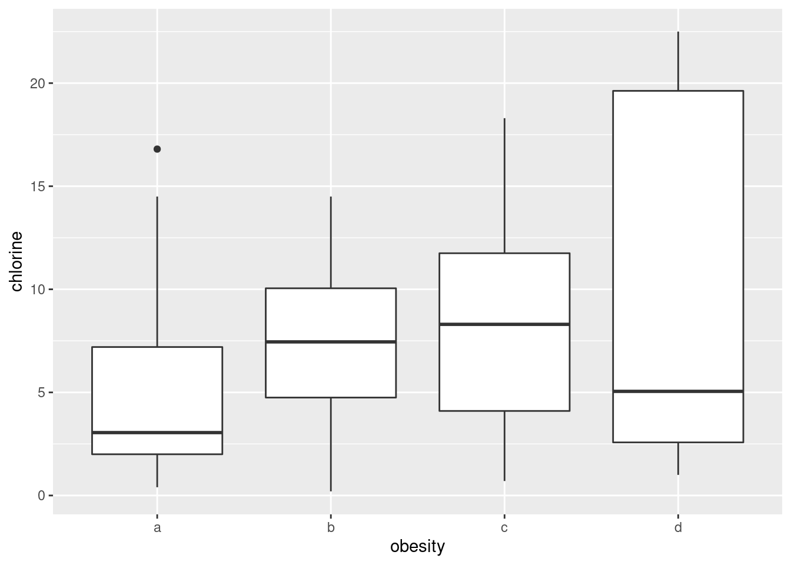

Chapter 32 Multivariate analysis of variance
Packages for this chapter:
32.1 Fabricated data
The data in
link
(probably made up) are measurements of two
variables y1 and y2 on three groups, labelled
a, b and c. We want to see whether
y1 or y2 or some combination of them differ among
the groups.
Read in the data and check that you have 12 observations on 2 numeric variables from 3 different groups.
Run a one-way ANOVA predicting
y1fromgroup. Are there any significant differences iny1among the groups? If necessary, run Tukey. What do you conclude?Repeat all the previous part for
y2.Make a plot of
y1againsty2, with the points distinguished by which group they are from.How is it that group
bis not distinguishable on eithery1ory2individually (from the ANOVAs), but is distinguishable on your graph? Explain briefly.Run a one-way multivariate analysis of variance, obtaining a P-value. Note the very small P-value.
32.2 Do characteristics of urine depend on obesity?
A study was made of the characteristics of urine of young
men. The men were classified into four groups based on their degree of
obesity. (The groups are labelled a, b, c, d.) Four variables
were measured, x (which you can ignore), pigment creatinine,
chloride and chlorine. The data are in
link as a
.csv file. There are 45 men altogether.
Read in the data and check that you have the right number of observations and the right variables.
Make boxplots of each of the three variables of interest against obesity group.
How, if at all, do the groups differ on the variables of interest?
Run a multivariate analysis of variance, using the three variables of interest as response variables, and the obesity group as explanatory. (This is a so-called one-way MANOVA.)
What do you conclude? Is this in line with what your boxplots said? Explain briefly.
32.3 How do height and weight depend on sport played by elite athletes?
This question uses the data on Australian elite athletes,
which can be found at
link. 202 elite
athletes had various physical and physiological measurements taken,
and for each athlete, their gender (in the column Sex) and
the sport they play (Sport) was also noted. The data values
are separated by tabs, meaning that read_tsv will
read them in.
Read in the data and verify that you have 202 rows and 13 columns.
We are going to see whether the height-weight combination of an athlete depends significantly on which sport they play and which gender they are. Explain (very) briefly why a multivariate analysis of variance will be necessary to do this.
Create a response variable for a MANOVA. (You don’t need to show what you got, since it is rather big.) The columns you want are called
HtandWt.Run a multivariate analysis of variance to see whether the height-weight combination depends significantly on gender, sport or the combination of both. Display the results. Use the small-m
manovaway to do this one.Briefly justify removing the interaction term from your previous model, and fit a model without it. You can use either
manovaorManovafor this; they should both work. (You only need to use one of them.) Display your results.See if you can make a graph that shows what’s going on here. Bear in mind that you have two quantitative variables and two categorical ones, so you will need to find a way to display everything. Hint: what would you do with two quantitative variables and one categorical one? Can you find a way to generalize that idea by displaying the other categorical variable differently? I think we have seen a couple of ideas that will work, somewhere in the lecture notes (but in a different context). Or you can search for ideas, of course. For full marks, obtain a plot which does not give you any warnings. (The grader will know which of the possible plots give warnings, and will deduct extra marks if you assert that a plot gives no warnings when in fact it does. That is to say, if you get any warnings, you need to include those in what you hand in).
My solutions follow:
32.4 Fabricated data
The data in
link
(probably made up) are measurements of two
variables y1 and y2 on three groups, labelled
a, b and c. We want to see whether
y1 or y2 or some combination of them differ among
the groups.
- Read in the data and check that you have 12 observations on 2 numeric variables from 3 different groups.
Solution
##
## ── Column specification ──────────────────────────────────────────────────────────────────────────────────────────────────────────────────────────────────────────────────────────────────────
## cols(
## group = col_character(),
## y1 = col_double(),
## y2 = col_double()
## )## # A tibble: 12 x 3
## group y1 y2
## <chr> <dbl> <dbl>
## 1 a 2 3
## 2 a 3 4
## 3 a 5 4
## 4 a 2 5
## 5 b 4 8
## 6 b 5 6
## 7 b 5 7
## 8 c 7 6
## 9 c 8 7
## 10 c 10 8
## 11 c 9 5
## 12 c 7 6As promised: 12 observations, 2 numeric variables y1 and
y2, and one categorical variable (as text) containing three
groups a,b,c.
\(\blacksquare\)
- Run a one-way ANOVA predicting
y1fromgroup. Are there any significant differences iny1among the groups? If necessary, run Tukey. What do you conclude?
Solution
## Df Sum Sq Mean Sq F value Pr(>F)
## group 2 63.45 31.72 21.2 0.000393 ***
## Residuals 9 13.47 1.50
## ---
## Signif. codes: 0 '***' 0.001 '**' 0.01 '*' 0.05 '.' 0.1 ' ' 1## Tukey multiple comparisons of means
## 95% family-wise confidence level
##
## Fit: aov(formula = y1 ~ group, data = simple)
##
## $group
## diff lwr upr p adj
## b-a 1.666667 -0.9417891 4.275122 0.2289181
## c-a 5.200000 2.9089670 7.491033 0.0003548
## c-b 3.533333 1.0391725 6.027494 0.0083999The \(F\)-test said that there were differences among the groups, so I
ran Tukey and found that group c is significantly bigger on
y1 than the other two groups.
\(\blacksquare\)
- Repeat all the previous part for
y2.
Solution
## Df Sum Sq Mean Sq F value Pr(>F)
## group 2 19.05 9.525 9.318 0.00642 **
## Residuals 9 9.20 1.022
## ---
## Signif. codes: 0 '***' 0.001 '**' 0.01 '*' 0.05 '.' 0.1 ' ' 1## Tukey multiple comparisons of means
## 95% family-wise confidence level
##
## Fit: aov(formula = y2 ~ group, data = simple)
##
## $group
## diff lwr upr p adj
## b-a 3.0 0.8440070 5.155993 0.0093251
## c-a 2.4 0.5063697 4.293630 0.0157279
## c-b -0.6 -2.6615236 1.461524 0.7050026Same idea: there is a difference, and Tukey reveals that this time
group a is significantly smaller than the other groups
on y2.
\(\blacksquare\)
- Make a plot of
y1againsty2, with the points distinguished by which group they are from.
Solution
y1 and y2 can be either way around, since
they are both response variables (!):

\(\blacksquare\)
- How is it that group
bis not distinguishable on eithery1ory2individually (from the ANOVAs), but is distinguishable on your graph? Explain briefly.
Solution
Group b has the same kind of y1 values as group
a and the same kind of y2 values as group
c. This means looking at either variable singly is not
enough to distinguish group b. But group b
stands out on the graph as being “top left” of the picture. That
means that y1 has to be low and y2 has to
be high, both together, to pick out group b.
That seems like a lot of work, but the important point
that I want you to raise is that the points in group b
are distinguished by a particular combination of values of
y1 and y2.
\(\blacksquare\)
- Run a one-way multivariate analysis of variance, obtaining a P-value. Note the very small P-value.
Solution
This is just like the seed weight and yield example in class (deliberately so):
response <- with(simple, cbind(y1, y2))
simple.3 <- manova(response ~ group, data = simple)
summary(simple.3)## Df Pillai approx F num Df den Df Pr(>F)
## group 2 1.3534 9.4196 4 18 0.0002735 ***
## Residuals 9
## ---
## Signif. codes: 0 '***' 0.001 '**' 0.01 '*' 0.05 '.' 0.1 ' ' 1The P-value here, 0.00027, is smaller than either of the P-values for
the one-variable ANOVAs. This expresses the idea that the group
difference is essentially multivariate (it depends on the
combination of y1 and y2 values). I only
wanted you to note that it is smaller than either of the other
ANOVAs; you don’t need to say anything about why.
We were in the fortunate position of being able to draw a picture, because we had only two response variables, and we could plot them against each other with the groups labelled. (If we had three response variables, like the peanuts example, we wouldn’t be able to do this, barring some kind of 3D-plotting procedure.)
\(\blacksquare\)
32.5 Do characteristics of urine depend on obesity?
A study was made of the characteristics of urine of young
men. The men were classified into four groups based on their degree of
obesity. (The groups are labelled a, b, c, d.) Four variables
were measured, x (which you can ignore), pigment creatinine,
chloride and chlorine. The data are in
link as a
.csv file. There are 45 men altogether.
- Read in the data and check that you have the right number of observations and the right variables.
Solution
read_csv:
##
## ── Column specification ──────────────────────────────────────────────────────────────────────────────────────────────────────────────────────────────────────────────────────────────────────
## cols(
## obesity = col_character(),
## x = col_double(),
## creatinine = col_double(),
## chloride = col_double(),
## chlorine = col_double()
## )## # A tibble: 45 x 5
## obesity x creatinine chloride chlorine
## <chr> <dbl> <dbl> <dbl> <dbl>
## 1 a 24 17.6 5.15 7.5
## 2 a 32 13.4 5.75 7.1
## 3 a 17 20.3 4.35 2.3
## 4 a 30 22.3 7.55 4
## 5 a 30 20.5 8.5 2
## 6 a 27 18.5 10.2 2
## 7 a 25 12.1 5.95 16.8
## 8 a 30 12 6.3 14.5
## 9 a 28 10.1 5.45 0.9
## 10 a 24 14.7 3.75 2
## # … with 35 more rowsThe variables are as promised, and we do indeed have 45 rows.
\(\blacksquare\)
- Make boxplots of each of the three variables of interest against obesity group.
Solution
Just churn through it:



This also works with facets, though it is different from the other ones we’ve done, in that we have to collect together the \(y\)-variables first rather than the \(x\)s:
urine %>%
pivot_longer(creatinine:chlorine, names_to="yname", values_to="y") %>%
ggplot(aes(x = obesity, y = y)) + geom_boxplot() +
facet_wrap(~yname, scales = "free", ncol = 2)
I decided to throw a couple of things in here: first, the
scales="free" thing since the \(y\)-variables (this time) are
on different scales, and second, the ncol=2 to arrange the
facets in (3 cells of) a \(2\times 2\) grid, rather than having them
come out tall and skinny.36 It’s unusual to have faceted boxplots, but this is one
of those cases where it makes sense. (The key is different \(y\)’s but
the same \(x\), I think.)
The conclusions about the boxplots are, of course, the same. I think it makes it easier to have the three boxplots side by side, but it’s up to you whether you think that gain is worth the extra coding.
Extra: let’s take another look at that longer data frame:
## # A tibble: 135 x 4
## obesity x yname y
## <chr> <dbl> <chr> <dbl>
## 1 a 24 creatinine 17.6
## 2 a 24 chloride 5.15
## 3 a 24 chlorine 7.5
## 4 a 32 creatinine 13.4
## 5 a 32 chloride 5.75
## 6 a 32 chlorine 7.1
## 7 a 17 creatinine 20.3
## 8 a 17 chloride 4.35
## 9 a 17 chlorine 2.3
## 10 a 30 creatinine 22.3
## # … with 125 more rowsYou might say that there is one quantitative variable now, the thing we called y, and two categorical variables, obesity and yname. So why not make a grouped boxplot? All right:
urine %>%
pivot_longer(creatinine:chlorine, names_to="yname", values_to="y") %>%
ggplot(aes(x=yname, y=y, colour=obesity)) + geom_boxplot()This actually looks a lot like the facetted boxplots (if you imagine drawing a box around each group of four boxplots and removing the scales="free" before). There is, as the saying goes, more than one way to skin a cat.
\(\blacksquare\)
- How, if at all, do the groups differ on the variables of interest?
Solution
Any sensible comment here is good. You can take the approach that group D is lowest on creatinine and chloride, but there is not much to choose (given the amount of variability) on chlorine. Or you can say that groups B and C are generally highest, except for chloride where A is higher. Anything of this general kind is fine. The point here is that some of the groups appear to be different on some of the variables, which would make a multivariate analysis of variance (in a moment) come out significant.
\(\blacksquare\)
- Run a multivariate analysis of variance, using the three variables of interest as response variables, and the obesity group as explanatory. (This is a so-called one-way MANOVA.)
Solution
Create the response variable and run manova:
response <- with(urine, cbind(creatinine, chlorine, chloride))
urine.1 <- manova(response ~ obesity, data = urine)
summary(urine.1)## Df Pillai approx F num Df den Df Pr(>F)
## obesity 3 0.43144 2.2956 9 123 0.02034 *
## Residuals 41
## ---
## Signif. codes: 0 '***' 0.001 '**' 0.01 '*' 0.05 '.' 0.1 ' ' 1\(\blacksquare\)
- What do you conclude? Is this in line with what your boxplots said? Explain briefly.
Solution
The null hypothesis (that each of the variables have the same mean
for each of the groups) is rejected: that is, not all of the
groups have the same mean on all of the variables.
Based on the idea that there seemed to be differences between the
groups in the boxplots, this makes sense. (That’s what I saw,
anyway. There was a lot of variability within the groups, which is
why the P-value didn’t come out smaller.)
The other way of doing this is the following, using
Manova from car:
##
## Type II MANOVA Tests: Pillai test statistic
## Df test stat approx F num Df den Df Pr(>F)
## obesity 3 0.43144 2.2956 9 123 0.02034 *
## ---
## Signif. codes: 0 '***' 0.001 '**' 0.01 '*' 0.05 '.' 0.1 ' ' 1The result is the same. You don’t need do this one here (though you
can as an alternative), but when you come to repeated measures you
will need to be able to use Manova.
To understand the differences in the variables due to the groups, we need to run a discriminant analysis (coming up later).
\(\blacksquare\)
32.6 How do height and weight depend on sport played by elite athletes?
This question uses the data on Australian elite athletes,
which can be found at
link. 202 elite
athletes had various physical and physiological measurements taken,
and for each athlete, their gender (in the column Sex) and
the sport they play (Sport) was also noted. The data values
are separated by tabs, meaning that read_tsv will
read them in.
- Read in the data and verify that you have 202 rows and 13 columns.
Solution
As in the hint:
##
## ── Column specification ──────────────────────────────────────────────────────────────────────────────────────────────────────────────────────────────────────────────────────────────────────
## cols(
## Sex = col_character(),
## Sport = col_character(),
## RCC = col_double(),
## WCC = col_double(),
## Hc = col_double(),
## Hg = col_double(),
## Ferr = col_double(),
## BMI = col_double(),
## SSF = col_double(),
## `%Bfat` = col_double(),
## LBM = col_double(),
## Ht = col_double(),
## Wt = col_double()
## )## # A tibble: 202 x 13
## Sex Sport RCC WCC Hc Hg Ferr BMI SSF `%Bfat` LBM Ht Wt
## <chr> <chr> <dbl> <dbl> <dbl> <dbl> <dbl> <dbl> <dbl> <dbl> <dbl> <dbl> <dbl>
## 1 female Netball 4.56 13.3 42.2 13.6 20 19.2 49 11.3 53.1 177. 59.9
## 2 female Netball 4.15 6 38 12.7 59 21.2 110. 25.3 47.1 173. 63
## 3 female Netball 4.16 7.6 37.5 12.3 22 21.4 89 19.4 53.4 176 66.3
## 4 female Netball 4.32 6.4 37.7 12.3 30 21.0 98.3 19.6 48.8 170. 60.7
## 5 female Netball 4.06 5.8 38.7 12.8 78 21.8 122. 23.1 56.0 183 72.9
## 6 female Netball 4.12 6.1 36.6 11.8 21 21.4 90.4 16.9 56.4 178. 67.9
## 7 female Netball 4.17 5 37.4 12.7 109 21.5 107. 21.3 53.1 177. 67.5
## 8 female Netball 3.8 6.6 36.5 12.4 102 24.4 157. 26.6 54.4 174. 74.1
## 9 female Netball 3.96 5.5 36.3 12.4 71 22.6 101. 17.9 56.0 174. 68.2
## 10 female Netball 4.44 9.7 41.4 14.1 64 22.8 126. 25.0 51.6 174. 68.8
## # … with 192 more rows202 rows and 13 columns indeed.
\(\blacksquare\)
- We are going to see whether the height-weight combination of an athlete depends significantly on which sport they play and which gender they are. Explain (very) briefly why a multivariate analysis of variance will be necessary to do this.
Solution
We now have two response variables, height and weight, rather than just one. In order to do a test with more than one response variable, we need to use multivariate ANOVA rather than regular ANOVA. (The first sentence is enough.)
Extra: the explanatory variables, sport and gender, are both categorical here, which makes a MANOVA work. If either of them had been quantitative, we would have needed to do a multivariate regression, which is beyond the scope of what we do in this course.
\(\blacksquare\)
- Create a response variable for a MANOVA. (You don’t need to
show what you got, since it is rather big.) The columns you want are
called
HtandWt.
Solution
Use cbind to glue the two columns together:
Either way around, height or weight first, is good. Also good is the
dollar sign, which you’ll need to do twice (and thus the with
way is more elegant):
\(\blacksquare\)
- Run a multivariate analysis of variance to see whether the
height-weight combination depends significantly on gender, sport or the
combination of both. Display the results. Use the small-m
manovaway to do this one.
Solution
The straightforward way is small-m manova. I don’t know
what I should be calling my fitted model object, so I’m making
something up. Don’t forget to use the right names for the
variables, and to include an interaction:
## Df Pillai approx F num Df den Df Pr(>F)
## Sex 1 0.52412 101.325 2 184 <2e-16 ***
## Sport 9 0.87914 16.123 18 370 <2e-16 ***
## Sex:Sport 6 0.04105 0.646 12 370 0.8023
## Residuals 185
## ---
## Signif. codes: 0 '***' 0.001 '**' 0.01 '*' 0.05 '.' 0.1 ' ' 1The other way is apparently to use large-M Manova from package
car. This goes as a two-stage process: fit an lm
first with the same model formula as above, and then pass that
into Manova. This way, you just display the final result,
rather than passing it into summary:
## Error in solve.default(wcrossprod(model.matrix(mod), w = wts)): Lapack routine dgesv: system is exactly singular: U[13,13] = 0Except that this doesn’t work, for reasons that I don’t
understand. htwt.2 is fine; it’s the Manova that is
not working.
\(\blacksquare\)
- Briefly justify removing the interaction term from your
previous model, and fit a model without it. You can use either
manovaorManovafor this; they should both work. (You only need to use one of them.) Display your results.
Solution
The interaction should come out, since it is not
significant. (This is what I meant by “briefly.”)
To do that, in each case, replace the * with a +, or use
update. Most of those work:
## Df Pillai approx F num Df den Df Pr(>F)
## Sex 1 0.51888 102.454 2 190 < 2.2e-16 ***
## Sport 9 0.86923 16.314 18 382 < 2.2e-16 ***
## Residuals 191
## ---
## Signif. codes: 0 '***' 0.001 '**' 0.01 '*' 0.05 '.' 0.1 ' ' 1or
## Warning in if (projections) qr <- lmcall$qr <- TRUE: the condition has length > 1 and only the first element will be used## Error in if (projections) qr <- lmcall$qr <- TRUE: argument is not interpretable as logicalIt seems that manova things don’t like update. If
that happened to you, try it another way.
or, with Manova, the same two ways:
##
## Type II MANOVA Tests: Pillai test statistic
## Df test stat approx F num Df den Df Pr(>F)
## Sex 1 0.44278 75.489 2 190 < 2.2e-16 ***
## Sport 9 0.86923 16.314 18 382 < 2.2e-16 ***
## ---
## Signif. codes: 0 '***' 0.001 '**' 0.01 '*' 0.05 '.' 0.1 ' ' 1or
##
## Type II MANOVA Tests: Pillai test statistic
## Df test stat approx F num Df den Df Pr(>F)
## Sex 1 0.44278 75.489 2 190 < 2.2e-16 ***
## Sport 9 0.86923 16.314 18 382 < 2.2e-16 ***
## ---
## Signif. codes: 0 '***' 0.001 '**' 0.01 '*' 0.05 '.' 0.1 ' ' 1These both work, and give the same answer. I think this is because the
thing being updated is a regular lm; the
Manova bit comes after, and is calculated from the
lm fit.
Any of these is good, and gets you the same answer.
Extra: it you run summary on the output from Manova,
you get more detail:
##
## Type II MANOVA Tests:
##
## Sum of squares and products for error:
## Ht Wt
## Ht 6871.978 5842.771
## Wt 5842.771 13613.021
##
## ------------------------------------------
##
## Term: Sex
##
## Sum of squares and products for the hypothesis:
## Ht Wt
## Ht 4582.744 6146.078
## Wt 6146.078 8242.718
##
## Multivariate Tests: Sex
## Df test stat approx F num Df den Df Pr(>F)
## Pillai 1 0.4427781 75.48862 2 190 < 2.22e-16 ***
## Wilks 1 0.5572219 75.48862 2 190 < 2.22e-16 ***
## Hotelling-Lawley 1 0.7946171 75.48862 2 190 < 2.22e-16 ***
## Roy 1 0.7946171 75.48862 2 190 < 2.22e-16 ***
## ---
## Signif. codes: 0 '***' 0.001 '**' 0.01 '*' 0.05 '.' 0.1 ' ' 1
##
## ------------------------------------------
##
## Term: Sport
##
## Sum of squares and products for the hypothesis:
## Ht Wt
## Ht 6162.455 7070.085
## Wt 7070.085 13727.950
##
## Multivariate Tests: Sport
## Df test stat approx F num Df den Df Pr(>F)
## Pillai 9 0.8692278 16.31358 18 382 < 2.22e-16 ***
## Wilks 9 0.3132928 16.60578 18 380 < 2.22e-16 ***
## Hotelling-Lawley 9 1.6093145 16.89780 18 378 < 2.22e-16 ***
## Roy 9 1.0593835 22.48247 9 191 < 2.22e-16 ***
## ---
## Signif. codes: 0 '***' 0.001 '**' 0.01 '*' 0.05 '.' 0.1 ' ' 1There are actually four competing tests that generalize the one-response-variable \(F\) statistic in different ways. The one we’ve been using is called Pillai’s Trace, but if you go looking in a text on multivariate analysis, you’ll also see the others, especially Wilks’s \(\Lambda\) (that’s a capital lambda). They will generally agree in terms of conclusion, so you can look at them all if you like, but it doesn’t hurt much to look at only one.
I am in danger of running out of numbers for my fitted models (and am definitely in danger of forgetting which one is which)!
\(\blacksquare\)
- See if you can make a graph that shows what’s going on here. Bear in mind that you have two quantitative variables and two categorical ones, so you will need to find a way to display everything. Hint: what would you do with two quantitative variables and one categorical one? Can you find a way to generalize that idea by displaying the other categorical variable differently? I think we have seen a couple of ideas that will work, somewhere in the lecture notes (but in a different context). Or you can search for ideas, of course. For full marks, obtain a plot which does not give you any warnings. (The grader will know which of the possible plots give warnings, and will deduct extra marks if you assert that a plot gives no warnings when in fact it does. That is to say, if you get any warnings, you need to include those in what you hand in).
Solution
This will probably involve a bit of digging.
The starting point would be a scatterplot (the two quantitative
variables) with the points distinguished by colour (one of the
categorical variables). What other options do we have?
If you look eg. at the navigation on the left of
link, you’ll
see that there are two likely possibilities: shape and
size. shape uses a different plotting symbol for
each value of a categorical variable; size draws the
plotting symbol bigger or smaller according to the value of a
categorical variable.
The remaining question is the one of which aesthetic to “map” to
which variable? To guide you in this, note that we have ten
different sports and two different genders. In my opinion, colours
are the easiest to distinguish a lot of, though even then 10 is
pushing it, then plotting symbols. Symbol sizes are hard to
distinguish a lot of, so it’s best to limit this (if you use it at
all) to gender.
With that in mind, I would go for this one:

If you investigate, you’ll find that ggplot can handle about
six different shapes (and we have ten sports), and it doesn’t care for
using size to distinguish values of a categorical
variable. It will try to draw the graph, but will give you a warning,
such as these:
## Warning: Using size for a discrete variable is not advised.
## Warning: Using size for a discrete variable is not advised.## Warning: The shape palette can deal with a maximum of 6 discrete values because more than 6 becomes difficult to discriminate; you have 10. Consider specifying
## shapes manually if you must have them.## Warning: Removed 72 rows containing missing values (geom_point).
## Warning: The shape palette can deal with a maximum of 6 discrete values because more than 6 becomes difficult to discriminate; you have 10. Consider specifying
## shapes manually if you must have them.## Warning: Removed 72 rows containing missing values (geom_point).Whatever plot you come up with, you can put height and weight on the other axes, since neither one of them is uniquely a response variable.
Any of these graphs with warnings do the job, kind of, so they get 2 points.
One of the many well-thought-out things about ggplot2 is that
making this graph was actually not difficult once you had figured out
that you also had shape and size at your
disposal. (In addition, ggplot2 will help you make some
aesthetic decisions about which variable is distinguished by what kind
of thing. This will help you work towards a plot that doesn’t have any
warnings. These warnings are pretty clear about what not to do, and by
implication what you need to do instead. Colour, for example, is
always safe warning-wise.)
The model for this kind of graph that we saw is the plot of probability (of preferring different brands of a product) as it depended on age (two quantitative variables) for each brand and gender (two categorical variables). I had three brands and two genders there, so I used colour for brand and shape for gender, but it would have worked about as well if I’d used shape for brand and colour for gender.
The warning message for shape contains the words ``specify
shapes manually if you must have them’’. I was wondering how you can
avoid that. Here’s how:
ggplot(athletes, aes(x = Ht, y = Wt, shape = Sport, colour = Sex)) + geom_point() +
scale_shape_manual(values = 1:10)I agree with ggplot2 that this many shapes are hard to tell
apart,37 but if you can figure this out,
you achieve the goal of producing a plot with no warnings, so you get
full marks. (We need 10 shapes because there are 10 different sports,
so we have to specify 10 different values in values=: any 10
different values will do. A list of the possible shapes is in
link,
at the bottom. You can even use regular letters, but you have to refer
to them by numeric code:
ggplot(athletes, aes(x = Ht, y = Wt, shape = Sport, colour = Sex)) + geom_point() +
scale_shape_manual(values = c(66, 70, 71, 78, 82, 83, 52, 84, 3, 87))I had to find something for TSprnt, since all the letters
appeared to be taken.
On consideration, I like this last graph the best, because the letters are more or less reminders of which sport each point is (they are “mnemonic”, so you don’t have to look them up all the time, as with colours or shapes: you can eventually remember which is which).
Whatever you come up with, expect: 3 marks if you get a plot with no warnings, 2 marks if you get a plot with warnings, 1 mark if you get a plot that would produce warnings but you don’t indicate that there are warnings, either by saying so or by including the warnings in what you hand in.
I didn’t ask you to interpret your plot (just getting it was enough work), but there seems to be a common theme that, for sports played by both genders, that the athletes are in about the same place relative to the other ones in their gender (eg., the basketball players are tall and heavy, the field athletes are really heavy but not very tall), but male athletes are both taller and heavier than female athletes playing the same sport. This consistency of pattern was probably why the interaction was nowhere near significant: there are additive separate effects of sport and of gender on the height-weight combination.
\(\blacksquare\)